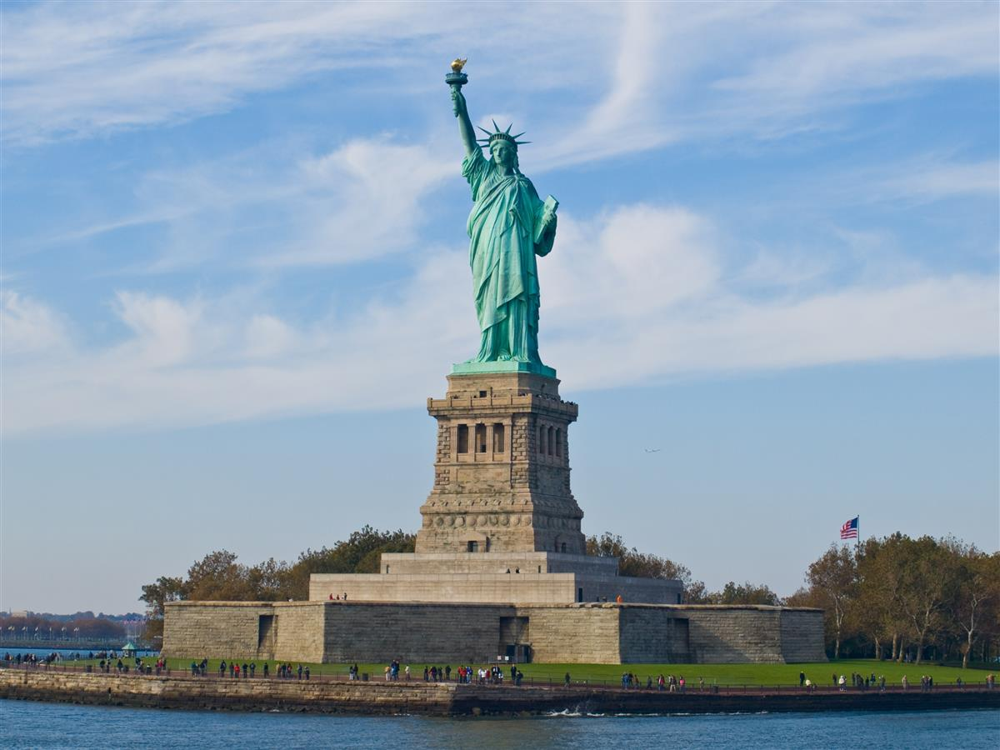
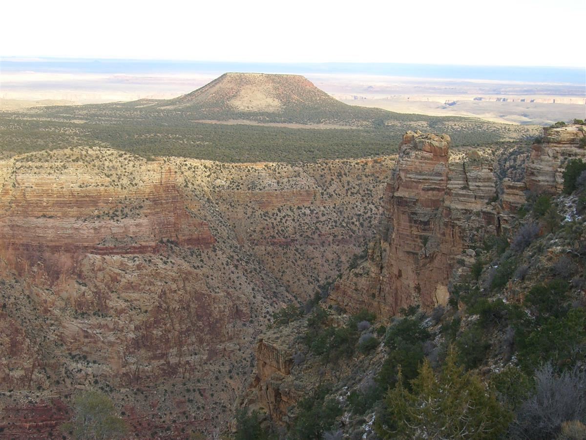
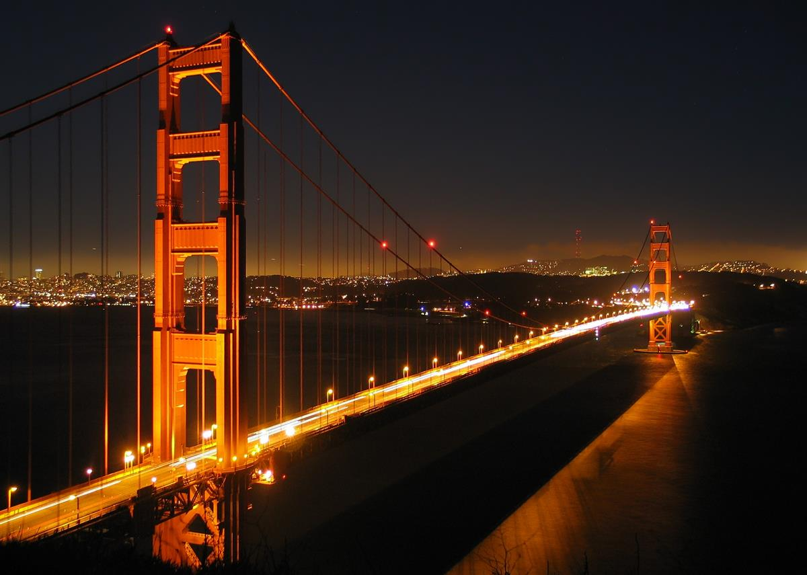
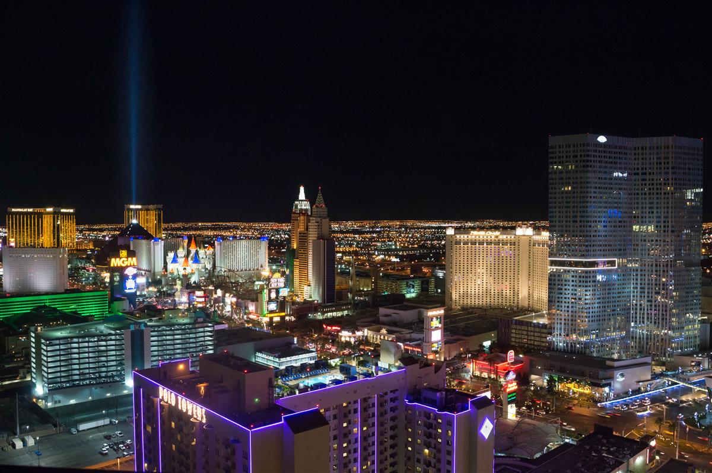
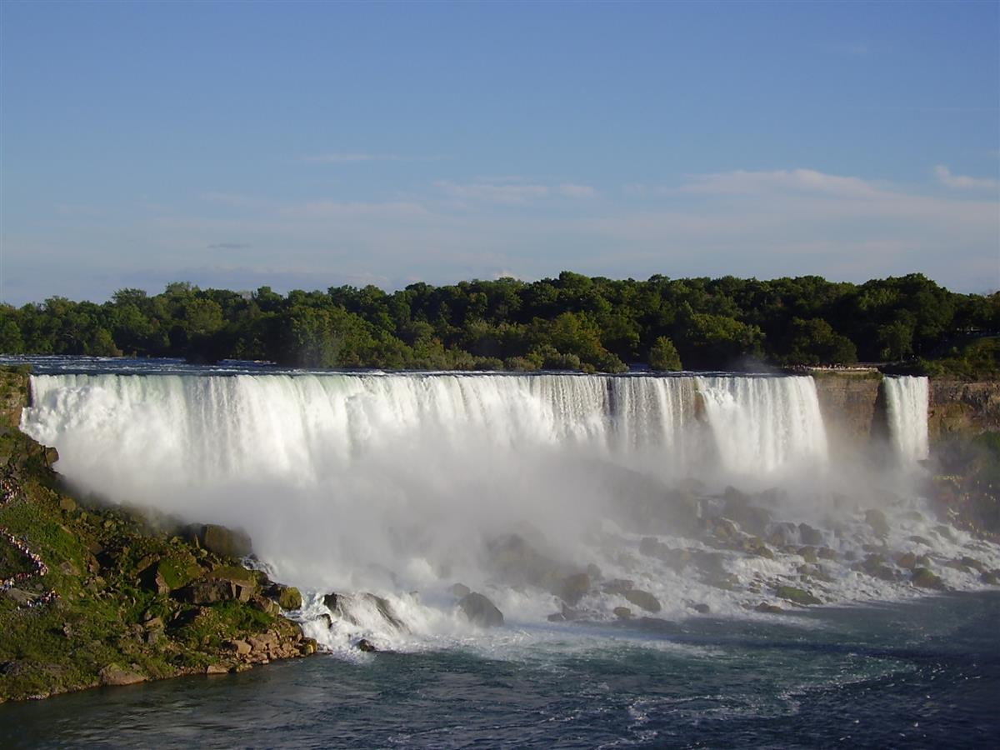
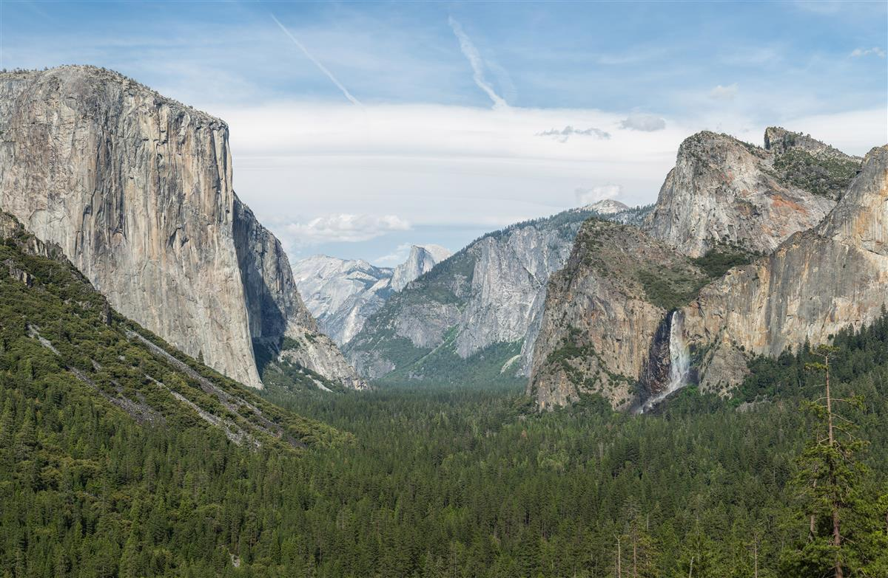
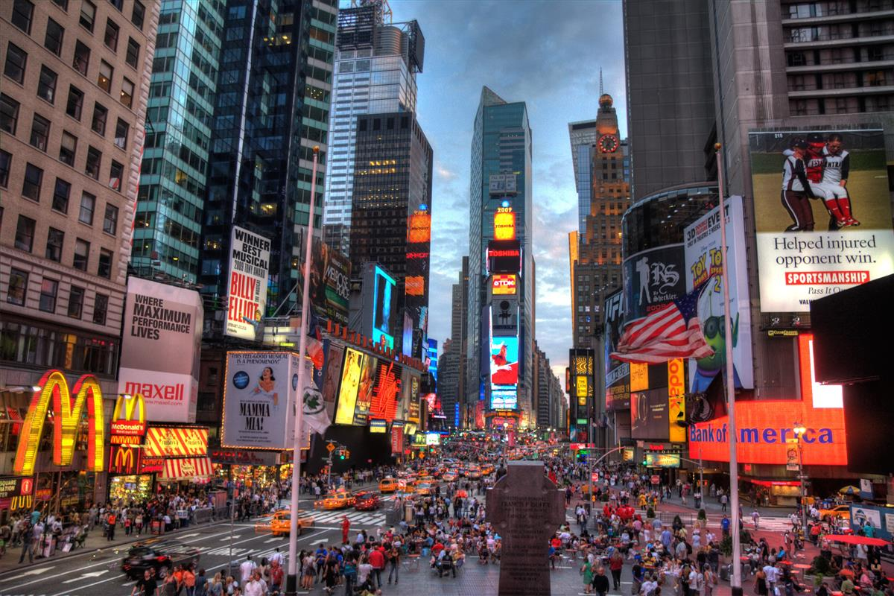

The United States is a vast and dazzling tapestry of landscapes, cultures, and stories that stretch across an entire continent. It is a land of bold ambitions, where the neon lights of Manhattan give way to the silent, ancient majesty of the Grand Canyon, and where the history of a young nation is written in the marble of its monuments and the dust of its open roads. Whether you are exploring the rhythm of a jazz-filled southern city or finding solitude in a massive national park, the USA offers a depth of experience that is consistently surprising and consistently grand. This guide takes you on an immersive journey across 8 essential American destinations—from the Pacific coast to the Atlantic shore—providing a window into the soul of a nation that is always in motion.

Standing tall in New York Harbor, the Statue of Liberty is the ultimate symbol of American freedom and democracy. A gift from France in 1886, Lady Liberty welcomed millions of immigrants arriving at Ellis Island. Climbing to the crown offers a panoramic view of the harbor and the Manhattan skyline.

Stretching for 277 miles across the high desert of Arizona, the Grand Canyon is one of the world's most profound natural wonders. Carved by the Colorado River over millions of years, its vastness is humbling, revealing a kaleidoscope of geological history in its layered red rocks.

The Golden Gate Bridge, with its "International Orange" towers often shrouded in mist, is a marvel of modern engineering. Spanning the strait between San Francisco Bay and the Pacific Ocean, it offers breathtaking views of the city's skyline and the rugged Marin Headlands.
Located at 1600 Pennsylvania Avenue in Washington, D.C., the White House is the official residence and workplace of the President of the United States. It stands as a living museum of American history and a symbol of the nation's executive leadership.

Rising from the Mojave Desert, Las Vegas is a neon-lit oasis of entertainment. The famous "Strip" is lined with opulent resort-casinos, world-class restaurants, and spectacular shows, making it a playground for those seeking excitement and luxury.

Straddling the border between the USA and Canada, Niagara Falls is a breathtaking display of nature's power. The Horseshoe Falls, American Falls, and Bridal Veil Falls combine to create the highest flow rate of any waterfall in North America, a thunderous spectacle that must be seen to be believed.

Yosemite is a cathedral of nature, famous for its giant sequoia trees and the towering granite monoliths of El Capitan and Half Dome. The Yosemite Valley, carved by glaciers, offers serene meadows, cascading waterfalls, and some of the best hiking and climbing in the world.

Times Square is the beating heart of New York City. Illuminated by massive digital billboards and teeming with energy day and night, it is the hub of the Broadway Theater District and a global symbol of urban vibrancy.
The Endless American Journey: The United States is a country that never ceases to amplify the imagination. From the neon pulse of its cities to the silent grandeur of its canyons, every journey across this vast land is a collection of stories waiting to be told. We hope this guide inspires you to find your own horizon in the beautiful, restless tapestry that is America. Safe travels!
Every destination and accommodation is hand-selected to meet the highest standards of luxury.
Book directly with verified premium providers to ensure the best rates and exclusive perks.
Our worldwide presence ensures you have premium support wherever your journey takes you.
"Luxe Voyages didn't just book a trip; they crafted an unforgettable experience. Every detail was handled with unparalleled professionalism."